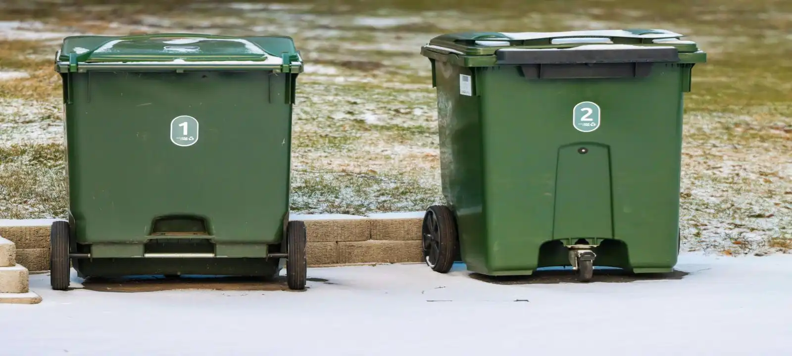
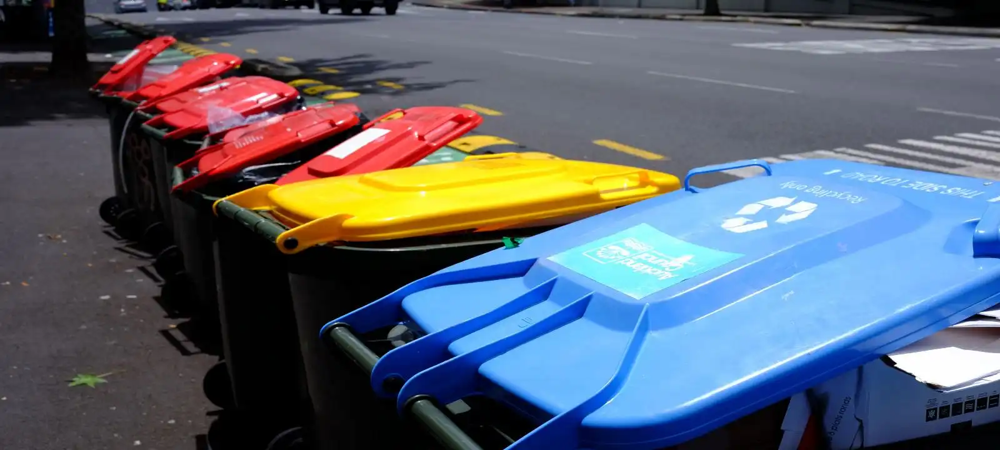

Skip Bin Hire Across The Launceston TAS Area
Skip bin hire Launceston area services are available across residential, commercial, and construction locations throughout the region. Whether you are clearing household rubbish, managing renovation waste, removing garden debris, or organising waste from a building project, having the right skip bin helps keep the site cleaner and easier to manage. Customers throughout the Launceston area use skip bins to reduce trips to waste facilities and simplify rubbish removal during projects of all sizes.
Areas We Service Throughout Launceston TAS
Our skip bin hire Launceston area service covers Launceston CBD and many surrounding suburbs including Invermay, Newnham, Mowbray, Riverside, Trevallyn, Prospect, Kings Meadows, Youngtown, Norwood, South Launceston, Summerhill, Blackstone Heights, and nearby communities. Whether you are located in a residential neighbourhood, commercial precinct, or developing construction area, we help customers access reliable skip bin hire Launceston area solutions close to their location.
Skip Bin Solutions Available Across The Region
Different projects generate different types of waste, which is why skip bin hire Launceston area services are available for a wide range of applications. Homeowners often use skip bins for garage cleanouts, moving house, furniture disposal, and garden maintenance. Builders and contractors commonly require larger skip bins for demolition materials, renovation debris, concrete, timber, and mixed construction waste. Businesses throughout the Launceston area also use skip bins for office cleanouts, warehouse waste, and ongoing commercial rubbish removal.
When You May Need Skip Bin Hire In The Launceston Area
Many customers book skip bin hire Launceston area services when waste volumes become too large for regular council collection. Common situations include home renovations, landscaping projects, deceased estate cleanups, rental property clearances, office relocations, and construction work. Having a skip bin on site helps keep waste contained, improves safety, and allows rubbish to be removed efficiently throughout the project rather than accumulating around the property.
Why Location Matters For Skip Bin Delivery
Property access can affect how skip bins are delivered and positioned throughout the Launceston area. Some locations have steep driveways, limited street access, narrow entrances, or restricted placement space. Understanding site conditions before delivery helps ensure the correct skip bin size is selected and reduces the risk of delays or placement issues. Local knowledge also helps customers organise practical skip bin hire Launceston area solutions that suit their property layout and project requirements.

Frequently Asked Questions
Do you provide skip bin hire throughout the whole Launceston area?
Yes. Skip bin hire Launceston area services are available across Launceston CBD and many surrounding suburbs. Delivery availability may vary depending on bin demand, property access, and location, but most residential, commercial, and construction sites throughout the region can be serviced.
Does my location affect skip bin delivery?
Property access can influence skip bin delivery and placement. Homes with narrow driveways, limited parking space, steep slopes, or street restrictions may require a different bin size or placement strategy. Providing access information before booking helps avoid delays and ensures the skip bin can be delivered safely.
What types of projects use skip bin hire in the Launceston area?
Skip bins are commonly used for household cleanups, moving house, landscaping work, green waste removal, renovation projects, commercial rubbish disposal, and construction waste management. The appropriate skip bin size depends on the amount and type of waste being generated.
Can skip bins be delivered to commercial and construction sites?
Yes. Skip bin hire Launceston area services are regularly used by builders, contractors, property managers, retailers, and industrial businesses. Skip bins help keep worksites organised while providing a practical solution for managing ongoing waste and debris.
How do I choose the right skip bin size?
The right skip bin size depends on the amount of rubbish, waste type, available space, and the type of project you are undertaking. Smaller bins are often suitable for household cleanups and garden waste, while larger bins are commonly used for renovations, commercial waste, and construction debris. If you are unsure which size is appropriate, we can help assess your requirements and recommend a skip bin that matches your project, helping you avoid overfilling, additional collections, or unnecessary hire costs.